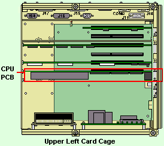

PCB - CPU
Purpose
- Drawings
- Details (Test Points, LEDs, Connector Overview, Connector Pin-outs)
- Schematics
- Location
Drawings
Use these drawings to identify connectors and test points on this PCB.
Details
- Hard drive
- Ethernet hub
- USB encoders (integrated platforms with UCTA)
- CPU Backplane PCB
- Serial output connector
- Keyboard/mouse/monitor extension cable (located on the right end of the CPU PCB)
Test Points
There are no test points provided on this PCB.
LEDs
There are no LEDs on this PCB.
Connector Overview
| # | Connection Notes | Function / Signals |
|---|---|---|
|
CN 1 HDD |
Cable, Ribbon, Hard Drive (P/N 111851) connects CN1 to the hard drive. |
The hard drive data runs through CN1. Length is 18 inches. |
|
CN 10 Advantech CN 8 Rocky |
CABLE, RIBBON, DSUB9 (P/N 111811) connects CN10 to COM2 on the upper left card cage. CABLE, COM2, SERIAL (P/N 111831) connects COM2 to the instrument rear panel COM2 connector located near the power inlet connection on the rear of the instrument. |
The serial data from the CPU PCB runs through CN10/CN8. |
|
Network |
CABLE, ETHERNET, CPU (P/N 121221) connects the CPU PCB to the ethernet hub. |
The data from the CPU PCB to the network hub runs through the network connector. |
|
External Keyboard / Mouse / Video |
The Kit, Cable, Video, Mouse, Keyboard (P/N 386217) extension cable connects to the CPU PCB video, mouse, and keyboard connectors.Extension cable for the |
Extension cable for the video, mouse, and keyboard connectors. |
|
USB (UCTA) |
A cable from the USB port connects to an interface PCB on the dual pipettor gantry for integrated platforms. |
On integrated platforms, that use a UCTA, the motor position encoders on the dual pipettor gantry (pipettor and a pick-and-place) use the USB port connection. |
|
Network (UCTA) |
A cable from a secondary network port connects to the system network hub used for the UCTA and DxC. |
This connection is used for communication between the instrument and the integrated system. |
HDD Connections
- The hard drive data runs through CN1.
- Cable, ribbon, hard drive (P/N 111851) connects CN1 to the hard drive.
| CN1 | Description | Signal / Voltage | To / From / Notes |
|---|---|---|---|
| 1 to 40 | Data | N/A | To / From the Hard Drive. |
Serial Connections
- The serial data from the CPU PCB to the external serial connector runs through CN10 or CN8.
- CABLE, RIBBON, DSUB9 (P/N 111811) connects CN10/CN8 to COM2 at the top of the upper left card cage.
- CABLE, COM2, SERIAL (P/N 111831) connects COM2 to the instrument rear panel COM2 connector located near the power inlet connection on the rear of the instrument.
| CN10 Advantech
CN8 Rocky |
Description | Signal / Voltage | To / From / Notes |
|---|---|---|---|
| 1 to 10 | Data | N/A | To / From the serial connector at the lower rear of the instrument. |
Network Connections
- The data from the CPU PCB to the network hub runs through the network connector.
- CABLE, ETHERNET, CPU (P/N 121221) connects the CPU PCB to the ethernet hub.
Keyboard, Mouse, and Video Connections
- The Kit, Cable, Video, Mouse, Keyboard (P/N 386217) extension cable connects to the CPU PCB video, mouse, and keyboard connectors.
- A keyboard/mouse splitter cable is provided with the CPU PCB.
USB (Bulk Feed II) Connections
- On instruments that have the bulk feeder II module, there is an elevator motor position encoder that connects to the CPU using a USB cable. This cable runs from the bulk feeder II interface PCB USB connection (J8) to the indicated USB port on the CPU. For details of which USB port to use (each CPU USB configuration is different), refer to the Drawings section.
USB (UCTA) Connections
- On integrated platforms that use a UCTA, the motor position encoders on the dual pipettor gantry (pipettor and pick-and-place) use the USB port connection indicated on the PCB drawing. A cable from the USB port connects to an interface PCB on the dual pipettor gantry.
Network (UCTA) Connections
- This connection is used for communication between the instrument and the integrated system.
- A cable from a secondary network port connects to the system network hub used for the UCTA and DxC.
Schematics
There are no schematics available for this PCB.
Location
